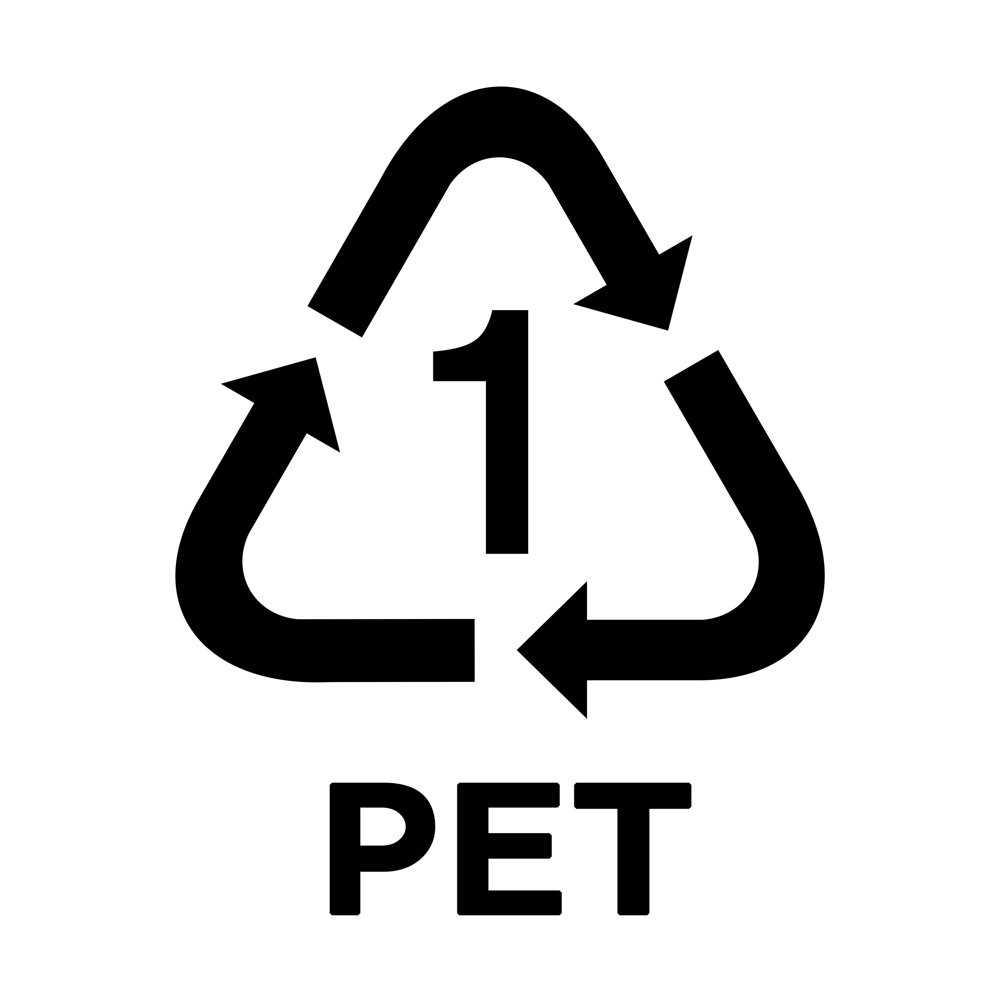

POLIETILEN TEREFTALATO

El Polietileno Tereftalato, también conocido por su sigla PET, es un tipo de plástico comúnmente utilizado en envases y botellas de gaseosa, agua y aceite, entre otros. Además de ser 100% reciclable, sus aplicaciones varían desde la fabricación de más envases hasta la producción de abrigos de polar.
¿COMO SE OBTIENE?
Químicamente el PET es un polímero que se obtiene mediante una reacción de policondensación entre el ácido tereftálico y el etilenglicol. Pertenece al grupo de materiales sintéticos denominados poliésteres. Es un polímero termoplástico lineal, con un alto grado de cristalinidad.